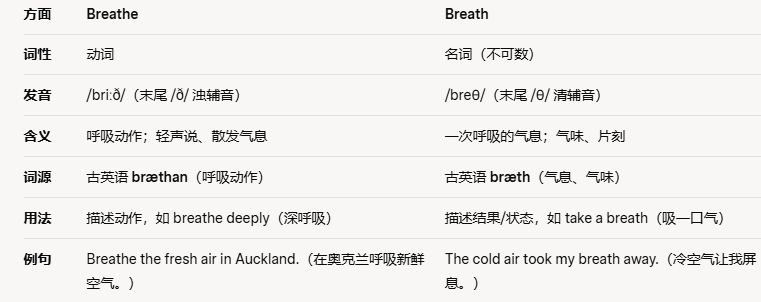

rectify v.改正;纠正 /rect是直立的意思
She reviewed the document and attempted to rectify the mistakes in it.她审阅了文件，并试图修改其中的错误。
rectify a fault 改正缺点
correct v.改正，纠正 adj.正确的
共 50 个词条 · 1 张附图（含音标截图）
rectify v.改正;纠正 /rect是直立的意思
She reviewed the document and attempted to rectify the mistakes in it.她审阅了文件，并试图修改其中的错误。
rectify a fault 改正缺点
correct v.改正，纠正 adj.正确的
meditation n.冥想，沉思
At the yoga class they often practised meditation to calm the mind and body.在瑜伽课上，他们经常练习冥想以使身心平静下来.
his meditations on life and art 他对生活和艺术的沉思
Labyrinths /ˈlæb.ə.rɪnθ/ 迷宫；曲径are thought to encourage a feeling of calm and have been used as a meditation and prayer tool in many cultures over many centuries.人们认为螺旋形迷宫能够促使人获得平静，几个世纪以来许多文化将其当作冥想和祈祷的辅助工具。
poverty /ˈpɒv.ə.ti/ n.贫穷;贫乏，短缺
She worked in a charitable (/ˈtʃær.ə.tə.bəl/ 慈善的)organisation which helped alleviate /əˈliː.vi.eɪt/ poverty她在一个帮助缓解贫困的慈善组织工作。
a poverty of ideas思想的贫乏
regardless adv. 不管；无论如何 后面一般加of
He was a determined climber and would go out climbing regardless of the weather.他是一个坚定的登山者，无论天气如何，他都要出去登山。
regardless of religion, colour, or creed (/kriːd/信条;信念;教义)不管宗教、肤色或信仰如何
gill n.鱼鳃;沟壑，溪流
The fish's gills allowed it to extract取出;拔出;提取 oxygen from the water. Enabling it to breathe鱼的鳃使它能够从水中吸取氧气，但使其能够呼吸。
breathe through gills 通过鳃呼吸

compete /kəmˈpiːt/ v.竞争;比赛;对抗
My daughter wants to compete in the athletics(/æθˈlet.ɪks/) competition next season.我女儿想参加下个季度的田径比赛。
competing for the contract 为得到合同而竞争
competitive adj.有竞争力的;竞争激烈的
competition n.竞争;比赛
competent adj.有能力的;能胜任的 相当于capable
perception /pəˈsep.ʃən/ n.知觉;感觉;看法，这个词来自于perceive
I was shocked to learn of the perception people really have of me.当我得知人们对我的真实看法时，我很震惊。
visual perception 视觉
general public perception 公众的普遍认识
perceive v.感觉到;发觉
The perception of smell, therefore, consists not only of the sensation of the odours （/ˈəʊ.dər/（常指难闻的）气味;臭味）themselves, but of the experiences and emotions associated with them.因此，对味觉的感知，不仅包括对气味的感觉本身，还包括与之相关的体验与情感。
mimic v. 模仿 n. 模仿者
The Ai computer programme is able to mimic the conversation of a real human. 人工智能程序能够模仿真人的对话。
mimic her southern accent 模仿她的南方口音
imitate /ˈɪm.ɪ.teɪt/ v. 模仿
mimetic adj.模仿的
Another powerful source of information for infants about the effects they can have on the world around them is provided when others mimic them.另一个婴儿可以获取的、有关他们对周边环境影响的重要途径产生于他人模仿他们之时。
animate adj. /ˈæn.ɪ.mət/有生命的，有活力的v. /ˈæn.ɪ.meɪt/使...有活力;制作动画
We appeal to men animated by a spirit of liberty and independence.我们呼吁那些被自由和独立精神所鼓舞的人
animate the crowd 让人们兴奋
animation n.活力;动画
Then we're making an animated diagram to show the geography of the area in prehistoric times.接下来我们打算用一个动态图表来展示该地区在史前时代的地理位置。
verdict n.结论;裁定
The jury concluded the case with the verdict that the defendant was guilty of the crime, and the judge sentenced him to three years in prison.陪审团以被告人有罪的决议结案，法官判他三年监禁。
reach a verdict 做出裁定
recommend v.推荐;介绍;建议
We do not recommend going to the restaurant if you are in a rush since the service is rather slow.如果你赶时间，我们不建议你去那家餐厅，因为服务相当慢。
be recommended for the post 被推荐到这个岗位 post相当于position
be highly recommended 得到高度赞扬
recommendation n.推荐;介绍
And which locations would you recommend? 你推荐哪些地点呢?
catalogue n.目录
The home decoration catalogue had a wide range of furniture of varying styles.家庭装饰目录上有风格多样的各种家具。
consult the library catalogue 查看图书馆目录
To make it easier to plan motoring holidays, the site catalogued动词 the most popular driving routes in the country, highlighting different routes according to the season and indicating distances and times.
为了让规划驾车度假更加容易，这一网站对国内最受欢迎的驾车路线进行了分类，根据季节标注了不同路线，并标示了距离和时间
apartment n.公寓;房间
They rented an apartment on the seventh floor while waiting to buy their new home.他们在准备购买新房的同时，在七层租了一套公寓。
her own apartment 她自己的公寓
reject v.拒绝;排斥;丢弃 ///相当于decline
Never reject an idea or goal because you think it might be hard work.永远不要因为你认为一个想法或目标可能很难而拒绝它。
reject an argument (争论;争吵;争辩;争执, 理由，论据，论点；论证，说理)拒绝接受一个观点
reject a suggestion 拒绝接受一项建议
rejection n.拒绝
odour /ˈəʊ.dər/n.（常指难闻的）气味；臭味
The men came in from working hard in the fields with the odour of sweat on their bodies.男人们从地里辛苦劳作回来，身上散发着汗水的味道。
the lingering（/ˈlɪŋ.ɡər.ɪŋ/持续的，长时间的） odour of car exhaust挥之不去的汽车尾气的气味
aerobic /eəˈrəʊ.bɪk/ adj.有氧的；需氧的
Regular aerobic exercises like jogging and swimming promote cardiovascular（/ˌkɑː.di.əʊˈvæs.kjə.lər/） health.定期的有氧运动，如慢跑和游泳，会促进心血管健康。
aerobic bacteria (/bækˈtɪə.ri.ə/，单数形式是bacterium) 需氧细菌
aerobic exercise 有氧运动
toxic /ˈtɒk.sɪk/ adj.有毒的;中毒的
Too much toxic waste is being dumped in the oceans太多有毒废物正被倾倒入海洋中。
dispose of toxic waste 处理有毒废料
toxin n.毒素;毒质
maternal /məˈtɜː.nəl/ adj.母亲的;母系的；母性的
Her maternal instincts 本能，直觉kicked in when she saw the baby crying当她看到婴儿哭泣时，母性本能开始发挥作用。
maternal age 育龄
maternal love 母爱
engage v.从事，参与;吸引
Only 20% of people in the country engage in regular physical exercise.这个国家只有20%的人定期参与体育锻炼。
engage in 参加，从事
engaging adj.有参与的感觉，很吸引人的，这门课很engaging。
perpetual adj.永久的;无期限的
He seems to possess a perpetual enthusiasm(/ɪnˈθjuː.zi.æz.əm/巨大兴趣；热情；热忱；热心) for taking up new hobbies and interests他似乎对培养新的爱好和兴趣有着永恒的热情。
the perpetual noise of traffic 持续不断的交通噪声
a perpetual monument 一座永久的丰碑
disclose v.透露，揭露
She would not disclose the personal information of her employees to anyone她不会向任何人透露雇员的个人信息。
refuse to disclose details of the takeover to the press拒绝向媒体透露公司收购的详细情况
reveal v.揭示，揭露
antibiotics n.抗生素
It's important to complete your entire course（这里指过程，不是课程） of antibiotics if you want them to be effective.如果你想让抗生素有效，完成整个疗程是很重要的。
prescribe antibiotics 开抗生素
Farmer ants secrete antibiotics to control other fungi that might act as “weeds”, and spread waste to fertilise the crop.工蚁分泌抗生素以控制其他可能充当“杂草”的真菌，并传播废弃物来为作物施肥。
fertile adj. 肥沃的
apportion v.分配;分派;分摊 portion=部分
They were unhappy with the failure of the product when it hit the market, but they did not apportion blame to anyone on the team.产品上市时，他们对产品的失败感到不满，但他们没有把责任归咎于团队中的任何人。
be apportioned according to contribution 根据贡献大小进行分配
proportion n.占比;比例
embassy /ˈem.bə.si/ n.大使馆;大使馆工作人员
The embassy will continue discussions with the government until the matter is resolved properly.大使馆将继续与政府沟通，直到问题妥善解决。
embassy officials 大使馆官员
inform the embassy of the situation 向大使馆报告形势
ambassador
endeavour /enˈdev.ər/ v.努力，尽力 n.努力，尝试
Her strong endeavours to improve the company performance were quite successful.她为改善公司业绩所作的努力相当成功。
make every endeavour to arrive on time 尽全力按时到达 ////类似于effort
Each definition is slightly different——and tends to reflect the field of endeavour of each pioneer.每个定义都略有小小的不同，且通常都映射出了每位先锋者所付出努力的领域。
withstand v.抵挡，抵御，经受住
The bridge was made of especially strong steel in order to withstand strong winds.这座桥用特别坚固的钢建造，以承受强风。
withstand high temperatures 承受高温
resist v.抵抗 这是同义词
gauge /ɡeɪdʒ/ 注意发音v.测量;估计 n.计量器;尺寸;规格
It is hard to gauge whether he is happy or sad because he displays little emotion.很难判断他是快乐还是悲伤，因为他没有流露出什么情感。
pressure gauge 压力计
pale adj.苍白的;浅色的;暗淡的
Her face turned pale when she heard the shocking news, her expression filled with disbelief.当她听到这个令人震惊的消息时，她的脸变得苍白，表情充满了疑惑。
pale with fear 害怕得脸色苍白
a pale sky 天色昏暗
pale yellow pear-shaped fruits 淡黄色梨形果实
demographic /ˌdem.əˈɡræf.ɪk/ adj.人口的;人口统计的
Currently in Europe they are discussing the implications含意;暗指，暗示 of the demographic trend towards an ageing population,目前在欧洲，他们正在讨论人口老龄化趋势的影响。
the demographic trend 人囗趋势
countless adj.无数的，数不尽的
There are countless romantic stories in the history of all countries and cultures.在所有国家和文化的历史上，都有无数的浪漫故事。
bring joy to countless people把快乐带给无数人
infect v. 使感染，传染
A single mosquito /məˈskiː.təʊ/ can infect a large number of people with malaria /məˈleə.ri.ə/.一只蚊子就可以让很多人感染疟疾。plants that are resistant to infection抗感染的植物。
infection n.传染;感染
infectious /ɪnˈfek.ʃəs/ adj.传染的;感染的
register v.登记;注册 n.登记表，注册簿
Please make sure you register for the course before September. 请确保自己在9月份之前注册该课程。
register a company 注册公司
register a trademark 注册商标
This involves the process of receiving and registering information, which is necessary for creating memories of information or events that you experience.这涉及接收和录入信息的过程，这对于创建你所经历的信息或事件的记忆是必要的。
masterpiece n.杰作，代表作
Mozart composed (作曲；创作（乐曲、诗歌）；著（书）)so many masterpieces that it's hard to say which is his best.莫扎特创作了如此多的杰出作品，以至于很难说哪个是他的最佳作品。
a masterpiece of simplicity 简洁朴实的典范
accuse v. 控告，指控；谴责
Both sides keep on accusing each other of starting to fight. But to be honest I think they are equally to blame.双方都指责对方挑起了争斗，但说实话，我认为双方都有责任。
be accused of incompetence 被指责无能
lexical adj.词汇的;词典的
He was not strong on grammar or pronunciation, but his lexical resource in English was fantastic.他在语法和发音方面不擅长，但他在英语词汇方面非常优秀。
provide helpful lexical information 提供有用的词汇信息
lexis n.词汇
astronomy /əˈstrɒn.ə.mi/ n.天文学
Those that are particularly good at physics sometimes go into the field of astronomy那些特别擅长物理的人有时会进入天文学领域。
a new era in astronomy天文学的新纪元
autonomy n.自治;自治权
economy n.经济
arrange v.安排，筹备;排列，布置
He usually arranged important team meetings in the mornings他通常在上午安排重要的团队会议。
arrange how to get to the airport 安排如何到达机场
arrangement n.安排;约定
implicit adj. 含蓄的；暗示的；隐式的 im=in plic=折叠往里折叠就是隐式的。
He did not get straight to the point about whether we would get an extra holiday, but his implicit suggestions seemed to indicate that we would not.他并没有直接告诉我们是否有额外假期，但他含蓄的建议似乎暗示了我们不会有。
implicit criticism 含蓄的批评
explicit adj.明确的，清楚的
reciprocal /rɪˈsɪp.rə.kəl/ adj. 相互的；互惠的
They had a reciprocal agreement that both parties adhered（/ədˈhɪər/黏附;附着） to.他们有一个双方都遵守的互惠协议。
a reciprocal trade agreement一份互利的贸易协议
distract v.转移(注意力)，使分心//tract表示拉拽，dis=away，所以这个词=拉走，转移
He has a problem with his concentration span, and gets distracted very easily with his mobile phone all the time他的注意力持续时间存在问题，总是很容易因为手机而分心。
distract me from my work 使我不能专心工作
distraction n.注意力分散;分心 这个词经常用
exterior /ɪkˈstɪə.ri.ər/ adj.外部的;表面的 n.外部;表面
The exterior of the skyscraper was illuminated by thousands of tiny lights.摩天大楼的外部被成千上万盏小灯照亮。
the exterior of the house 房屋外墙
interior adj.内部的;本质的 n.内部;里面
The interior has just been repainted, and we're about to start on the exterior of the building——that'll be a big job.内部刚刚重新喷漆，现在我们正在对外立面进行装修，这可是个大工程。
thrill n.兴奋，激动
The roller(滚轴；滚筒；轧辊) coaster(（航行于沿海港口间的）船只) ride provided an exhilarating (/ɪɡˈzɪl.ə.reɪ.tɪŋ/令人极度兴奋的;使人兴高采烈的)thrill for the excited students.过山车为激动的学生们提供了令人兴奋的刺激。 Rollercoaster 过山车
the thrill of catching a really big fish为捉到一条大鱼而兴奋
bud n.芽，花蕾v.发芽
The tiny bud on the plant indicated （这个不是直接表明而是提供了一些信息来表明）that spring was approaching.植物上的小嫩芽预示着春天快要来临了。
taste bud 味蕾
Farmers and gardeners have known for hundreds of years how responsive plants are to temperature: warm winters cause many trees and flowers to bud early, something humans have long used to predict weather and harvest times for the coming year.几百年来，农民和园丁都熟知植物对温度的感应能力:暖冬使许多树木和花朵能够更早发芽，人类长期以来一直以此预测来年的天气和收成。
textile n.纺织品 adj.纺织的
The textile industry plays a significant role in the country's economy, employing thousands of workers.纺织业在该国经济中扮演着重要角色，雇用了数千名工人。
the textile industry 纺织工业
a textile designer一位纺织品设计师
Organic(/ɔːˈɡæn.ɪk/注意重音在第二音节) materials like textiles and hides are relatively rare finds at archaeological(/ˌɑː.ki.əˈlɒdʒ.ɪ.kəl/考古学的;和考古有关的) sites诸如纺织品和兽皮之类的有机材料在考古现场相对罕见。
dull adj.枯燥的，无聊；黯淡的；阴沉的
The lecture was so dull that some students struggled to stay awake 讲座太枯燥了，有些学生难以保持清醒。
a dull grey colour 一种暗灰色
Long periods in the sun or bush fires could transform dull, cloudy lumps（/lʌmp/（通常指无固定形状的a sugar lump）块，团）into higher quality transparent gum（齿龈，牙龈，牙床，树胶，树脂，口香糖（同 chewing gum）泡泡糖（同 bubble gum））.长期的日晒或丛林火灾会将灰黑色的树脂块儿变成更高品质的透明树脂。
enthusiasm/ɪnˈθjuː.zi.æz.əm/ n.热心，热情
He approached the project with great enthusiasm and was determined to make it a success.他以极大的热情开始这个项目，并决心使其获得成功。
lose her enthusiasm for teaching 失去她对于教书的热忱
enthusiastic adj.热情的
pulse n.脉冲;脉搏v.跳动
The doctor felt his pulse and concluded that his heart rate was indeed very fast.医生摸了他的脉搏，确定他的心跳确实很快。
an abnormally high pulse rate异常高的脉率
magnitude n.重要性;大小;量级 magnificent magni看起来就是大的意思
The magnitude of the earthquake was bigger than any that California had experienced in decades.这次地震的震级比过去几十年来加利福尼亚州的任何一次地震都高。
realise the magnitude of the problem意识到这个问题的重要性
argument n.论证;论据;争吵
He didn't want an argument, so he tried to avoid discussing the serious matter with her.他并不想进行争论，因此他尽量避免与她讨论严肃的问题。
win an argument 在辩论中胜出
welfare /ˈwel.feər/ n.幸福，安康；福利
The government aimed to improve the welfare of its citizens through various programs.政府旨在通过各种计划改善公民的福利。
child welfare 儿童福利
a social welfare programme 一项社会福利计划
The cost is in the collateral （/kəˈlæt.ər.əl/并行的，担保品，抵押品, 附带的，次要的；（亲戚）旁系的，非直系的）damage of the very methods of food production that have made the food cheaper: in the pollution of water the enervation of soil, the destruction of wildlife, the harm to animal welfare and the threat to human health caused by modern industrial agriculture这代价恰恰是使食品变得便宜的生产方式本身所造成的间接伤害，这伤害包括现代工业化农业所造成的水资源污染、土壤贫瘠、野生动植物破坏、对动物权益的损害以及对人类健康的威胁。